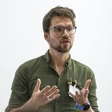
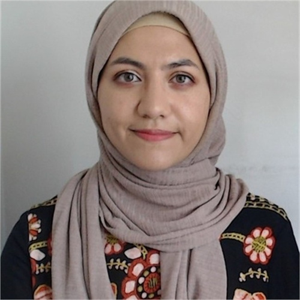
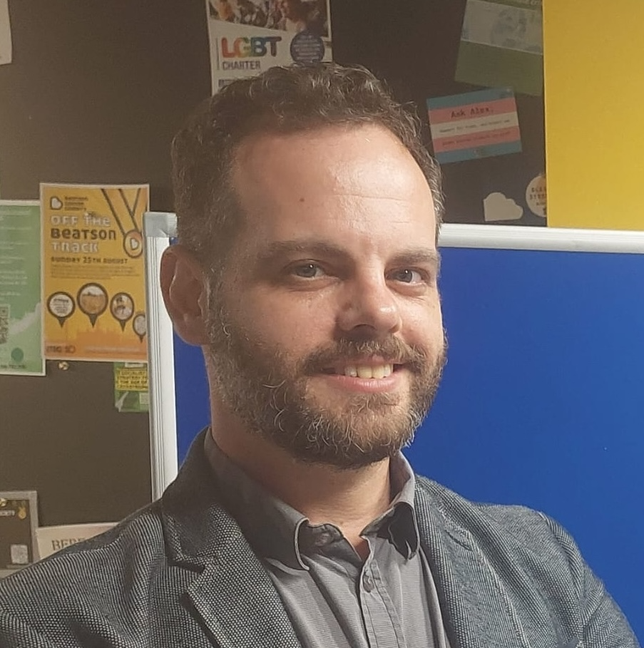

Scope
Millions of people worldwide leave their countries every year: refugees and asylum seekers may leave due to reasons such as wars, climate change and hostile environments, while the current global economic situation is also producing an increasing number of economic migrants. However, since most HRI research takes place with people in "WEIRD" (Western, Educated, Industrial, Rich, Democratic) countries, HRI systems are generally designed for, and evaluated on, people who are familiar with WEIRD communication.
In this workshop, we will explore HRI solutions to provide services and support for refugees, asylum seekers, and migrants. We will also discuss the ethical issues behind the use of robots for these populations, potential lessons learned from existing work, and work towards HRI that contributes to communities feeling more at home and welcome as they navigate their way in their new countries.
Call For Papers
We seek extended abstracts (2-4 pages, plus references, in IEEE format) on any of the following topics:
- HRI with Refugees, Asylum seekers or Migrants (RASM)
- Participatory HRI research with RASM
- Ethics, privacy, bias, fairness, accountability and transparency in HRI with RASM
- Anti-racist robotics
- HRI and human rights
Submitted work may be past, present, or future-facing. That is, submitted work can describe previously published work, new results, research plans, or speculations as to how one's prior work might apply in future research to this new domain. Accepted papers will be accompanied by talks and/or poster presentations and will be archived on the workshop website.
Important Dates
- Paper submission deadline: 25th July 2025 (final extension)
- Author notification: 1st August 2025
- Camera-ready submission: TBC
Submission instructions
Authors can submit papers of 2-4 pages plus references. All papers must be submitted in PDF and must follow the ICRA double-column format. Templates are available here. All papers will be peer-reviewed (single-blind). Both unpublished original contributions and previously published work may be submitted.
All submissions will be made electronically through the EasyChair conference system on this submission link.
Presence at the workshop is required, but it can be in-person or virtually.
Invited speakers
-

Koen Leurs Utrecht University, the Netherlands www
Koen Leurs is an associate professor in Gender, Media and Migration Studies at the Graduate Gender Program, Department of Media and Culture, Utrecht University, the Netherlands. His research interests are migration, borders, youth culture and digital technologies, co-creative methodologies and ethics. Currently, Leurs is part of the Management Committee of the Cost-Action DATA-MIG CA22135 - Data Matters: Sociotechnical Challenges of European Migration and Border Control. Recently, Leurs was the PI of the Team Science project Co-designing a fair digital asylum procedure, funded by the Digital Society (‘DiSa’) programme (a research programme by all fourteen Dutch research universities) and COMMIT/, a public-private ICT research community. He recently co-edited Doing Digital Migration Studies (Amsterdam University Press, 2024) and the Handbook of Media and Migration (Sage, 2020) and published the monograph Digital Migration (Sage, 2023).
-

Dina Sabie Humber College, Canada www
Dr. Dina Sabie is a Professor at Humber Polytechnic in Canada. Her research investigates how design, digital technologies, and co-creative practices can support the emotional well-being of migrants. She has worked closely with immigrants, refugees, and internally displaced persons (IDPs), with projects spanning multiple international sites, particularly in Canada and Iraq.
-
Yue Hu University of Waterloo, Canada www
Yue Hu is an Assistant Professor in Mechanical and Mechatronics Engineering at the University of Waterloo and director of the Active and Interactive Robotics Lab (AIRLab). She holds a PhD in Computer Science from Heidelberg University, with postdoctoral training at Heidelberg and the Italian Institute of Technology (IIT). Prior to joining Waterloo, she held academic and research positions in Japan, including as a JSPS fellow at AIST and Assistant Professor at Tokyo University of Agriculture and Technology. Her research bridges physical-social human-robot interaction, investigating how robots can interact safely and meaningfully with people, working on collaborative robots, humanoid robots, and optimal control, with a recent interest in cybersecurity and privacy in robotic systems. Yue is one of the co-chairs of the IEEE-RAS Technical Committee on Model-based Optimization for Robotics, an Associate Vice-President of the IEEE-RAS Members Activities Board (MAB), and an advisor for the organization Women in AI & Robotics.
Schedule
All times are in the Netherlands' timezone (CEST / UTC+2).
| 9:00 - 9:30 | Overview of the field of RAS4RASM | |
| 9:30 - 10:10 | Koen Leurs Utrecht University, the Netherlands |
"Doing digital migration studies: pluralizing understandings" Digital migration studies refers to an emerging interdisciplinary research area concerned with the study of migration in relation to digital technologies and datafication. In contemporary discussions on migration, digital technology is often considered as a ‘smart’ disruptive tool used by governments to surveill and protect borders while monitoring the movement of people in more efficient ways. However, the story about is more complex. Contemporary migration increasingly reflects a digitally mediated state of migrant being and a digitized and datafied condition. Migration and technology can be said to co-shape one another: migration is a site of technological innovation, and migration is deeply digitally mediated. Koen Leurs, in his recent book Digital Migration (Sage, 2023), and open access volume Doing digital migration studies (co-edited with Sandra Ponzanesi, Amsterdam University Press, 2024) draws out the complex, multilayered relationship between migration and digital technologies. Using an inter-disciplinary approach and covering case studies from the Global North as well as the Global South, Koen Leurs seeks to draw out the contradictions, tensions and hopes that characterize digital migration dynamics. From the critical role that digital infrastructures play in migration management to migrants’ use of devices, platforms and networks to connect and thrive, from the power of digital representations of migrants (and how these can be contested), pre-digital histories to the emotional realities of transnational families, Leurs invites scholars to pluralize understandings of migration and mobility in our contemporary world. In this talk he will draw out digital migration by addressing ontological, epistemological, methodological and ethical dimensions. |
| 10:10 - 10:25 | Dina Sabie Humber College, Canada |
"Beyond Access: Rethinking HCI for Migrants" Human-Computer Interaction (HCI) research has increasingly engaged with the technological experiences of refugees and immigrants. Yet, much of this work has traditionally focused on access and service delivery, often overlooking the broader social, emotional, and cultural dimensions of migration. This talk presents insights from research projects conducted in Canada and Iraq that examine how technology can support migrants’ cultural identity, emotional well-being, and social infrastructures. It also highlights critical ethical and political considerations for researchers working at the intersection of technology and [in]voluntary displacement. |
| 10:25 - 10:40 | Yue Hu University of Waterloo, Canada |
"Designing Peer-Learner Robots for Language Learning in Refugee Resettlement Contexts" Language acquisition is a critical factor in the successful integration of refugees and asylum seekers, yet existing educational supports are often limited in accessibility and personalization. This talk presents early-stage research on the design of peer-learner social robots for supporting language learning among refugee and immigrant families. As part of a broader effort to develop inclusive and responsive human-robot interaction (HRI), we explore how the social role of a robot might shape engagement and interaction in robot-assisted language learning (RALL). Early evaluations and engagement with frontline service providers highlight key design considerations around role framing, responsiveness, and social presence. Building on this foundation, the work is progressing toward community-partnered development and deployment in real-world newcomer support settings. The talk reflects on methodological challenges and future directions for inclusive, context-aware human-robot interaction in migration and resettlement domains. |
| 10:40 - 11:00 | Coffee break | |
| 11:00 - 11:40 | Short presentations (Accepted papers) | |
| 11:40 - 12:15 | Panel/Group discussion | |
| 12:15 - 12:30 | Closing remarks |
Organizers
-

Shaul Ashkenazi (Corresponding organizer) www
University of Glasgow, UK
-
Martim Brandao www
King's College London, UK
-
Mary Ellen Foster www
University of Glasgow, UK
-

Masoumeh Mansouri www
University of Birmingham, UK
-

Jane Stuart-Smith www
University of Glasgow, UK
-
Tom Williams www
Colorado School of Mines, US